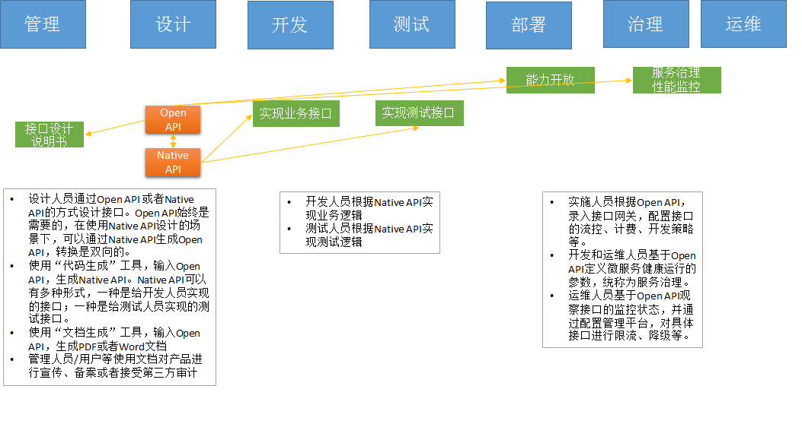
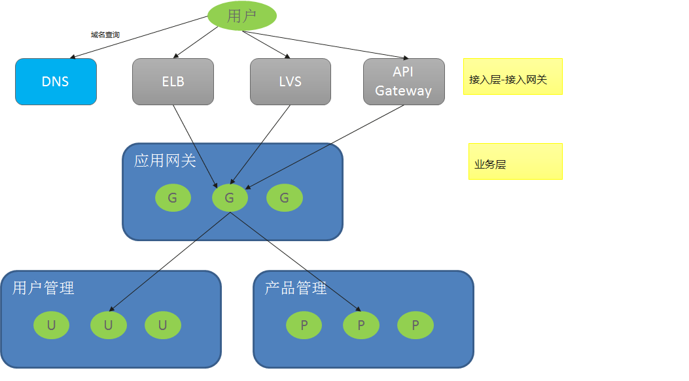
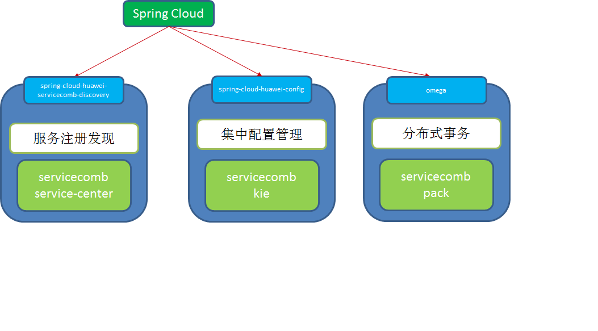

设计选型参考
Apache ServiceComb Java Chassis 结合大量微服务开发实践，实现微服务架构模式， 帮 助开发者更加简单、快速的构建微服务应用。
微服务架构模式的核心包含如下几部分：
- 微服务之间的 RPC 通信。Java Chassis 提供了非常高效的通信方式，并支持多协议扩展，比如最快的 REST 通信模式实现， 异步的二进制通信模式 HIGHWAY 。
- 分布式微服务实例和服务发现。结合 ServiceComb Service Center， 实现分布式、多集群服务发现能力，以及强大的微服务元数据管理能力。
- 配置外置，动态、集中的配置管理。 能够使用 ServiceComb Kie， 华为云配置中心、 Nacos、 Apollo 等多种配置中心， 并且和 Spring Boot 配置管理能力完整融合。
- 分布式故障管理，服务容错、隔离、熔断。 内置故障实例隔离、故障重试、耗时接口隔离等重要分布式故障处理能力。可选使用 Hystrix 的 容错、隔离、熔断能力， 只需要做简单的配置。
- 分布式日志追踪。 提供 Open Tracing 支持。
此外还有性能监控，日志记录系统、健康检查等。 Java Chassis 采用优雅的设计模式，实现了上述所有的核心部件的功能，并且使得这些功能 开箱即用。使用 Java Chassis , 开发者能够更加聚焦于业务功能开发，快速的构建商业可用的微服务应用。
Java Chassis 的软件工程实践
Java Chassis 在设计的时候， 不仅考虑了如何更好的使用微服务架构模式， 还把优秀的软件工程思想融合进来， 帮助开发者更好的管理信息 资产， 提升软件工程管理能力。
下图简单的描述 “以契约为中心” 的核心概念。

可以通过 Invocation 获取到 Java Chassis 的契约等源数据信息， 是 Java Chassis 的一个核心对象。
可以阅读 基于CSE的微服务工程实践-以契约为中心 了解契约如何应用的更多内容。 工程 实践不是 Java Chassis 的强制约束， 开发者可以结合实际情况进行选择。
Java Chassis 的运行时架构
为了支持软件工程实践， Java Chassis 的运行时架构是一个哑铃结构， 两端分别是“编程模型” 和 “通信模型”， 中间是“运行模型”。

“编程模型” 面向开发者写服务接口的习惯， “通信模型” 面向微服务之间的高效编码和通信， “运行模型” 基于“契约”， 提供一种服务服务无关 的插拔机制，能够让开发者独立于业务实现开发治理功能，并且灵活的移除和增加功能，以及调整这些治理功能的处理顺序。
“运行模型” 的核心抽象接口是 Handler ， 这个接口是一个异步的定义， Java Chassis 运行时模型采用纯异步的实现， 让整个系统运行非常 高效。
可以阅读 Apache ServiceComb 的开放性设计 了解 Java Chassis 运行时架构的其他设计考虑。
Java Chassis 微服务应用架构
有很多优秀的微服务应用架构实践。 微服务应用架构应该充分考虑系统的弹性， 能够针对系统的性能瓶颈点进行扩容， 需要考虑应用系统内部微服务 拆分的灵活性， 为业务的变更做好及时调整。
下图展示了一个典型的应用架构。 接入层采用一些网络基础设施，比如 DNS ， 浮动 IP 等方便用户采用统一的 URL 访问系统， 或者采用 API 网关等 基础设施实现系统的能力开放。 业务层包含应用网关， 进行一些认证鉴权、 审计等功能， 经过认证的请求被应用网关转发到微服务系统内部。

可以阅读单体应用微服务改造实践， 了解为什么推荐这样的微服务应用架构。 Java Chassis 为应用架构提供了接入网关服务 Edge Servcie。
Java Chassis 微服务技术选型
Java 语言拥有庞大的技术体系和标准， 并且广泛的应用到业务的系统的各个方面。 和 Java Chassis 有紧密关系的技术包括 JSP/Servlet 标准 和容器， Spring 和 Spring Boot 技术， 以及 Spring Boot 提供的 REST 开发框架 Spring MVC。
Java Chassis 和 JSP/Servlet 标准
Java Chassis 不依赖于 JSP/Servlet 标准， 可以基于 Vert.x 的 HTTP 实现， 提供非常轻量级和高效的 REST 服务， 在性能要求高的核心 业务场景， 使用这种轻量级的技术非常合适。 这种场景下， 没有完整的实现 JSP/Servlet 相关接口， 比如 HttpServletRequest, HttpServletResponse 等。 servicecomb-samples 提供了一个完整的使用这种部署模式的例子。 基于CSE的微服务架构实践-轻量级架构技术选型 提供了 一些常见的组件的选型参考。
Java Chassis 可以部署运行于 JSP/Servlet 容器里面， 在这个场景下， Java Chassis 的核心部件就是一个 Servlet ， 在这个 Servlet 里面 实现了 Java Chassis 的核心 RPC 系统。 采用 JSP/Servlet 容器运行 Java Chassis, 业务请求首先经过容器的 HTTP 实现， 然后经过 Filter， 进入 Java Chassis 的 RestServlet ， 运行 Java Chassis 的运行时模型 (Handlers) ， 进入业务接口处理。 可以参考 REST over Servlet 了解如何在 Servlet 容器中加载 Java Chassis 的 Servlet。
Java Chassis 和 Spring、Spring Boot
Java Chassis 目前依赖于 Spring， 但是从设计上是可以独立于 Spring 运行的。 Spring 是被广泛使用的技术， 非常轻量级， 在 Java Chassis 中可以直接使用 Spring 相关的技术。 Java Chassis 不依赖于 Spring Boot， 但是可以将 Java Chassis 运行于 Spring Boot 基础之上。
Spring Boot 2 开始也提供了多种运行环境支持， WebApplicationType.NONE, WebApplicationType.SERVLET, WebApplicationType.REACTIVE， Java Chassis 可以集成 NONE, SERVLET 两种模式。 在 NONE 模式下集成 Java Chassis， 和 Spring Boot 自身的 REACTIVE 非常类似， 但是比 Spring Boot 的 REACTIVE 运行更加高效， 并且支持早期的 RestTemplate API 和 RPC API 来访问服务。
可以阅读基于CSE的微服务架构实践-Spring Boot技术栈选型 了解一些常用的 Spring Boot 开发的组件选型参考。 servicecomb-samples 提供 了 WebApplicationType.SERVLET 使用 Spring Boot 的完整例子。 WebApplicationType.NONE 模式等价于轻量级模式， 但是可以使用 Spring Boot 的打包功能以及其他开发组件支持。
- Spring MVC
Java Chassis 继承了 Spring MVC 的接口设计， 提供了 Provider 和 Consumer 层面的 API 接口来定义 REST 接口和访问 REST 接口。 但是需要 注意的是， 两个是完全不同的实现， 实现机制也不一样。 Spring Boot 主要基于 Servlet， 实现了 MVC 模式， 不仅可以开发 REST 接口， 还可以 开发其他 HTTP 功能， 比如重定向， 返回 HTML 页面等， 还可以通过 @ExceptionHandler， @ControllerAdvice 等机制拦截 Servlet 请求，进行 异常处理。 Java Chassis 只实现了 REST 服务定义和调用， 并且在异常处理机制和请求拦截机制上不一样。 开发细节上的差异可以通过 用SpringMVC 开发微服务 进行了解。
Java Chassis 与 Spring Cloud
Java Chassis 和 Spring Cloud 都实现了微服务架构模式， 相比而言， Java Chassis 是一个更加紧凑的实现， 开箱即用， 而 Spring Cloud 则是 相对松散的实现， 整合了大量的 Netflix 组件。
微服务架构模式关注微服务内部和微服务之间的设计， 也关注微服务与微服务基础设施之间的关系。 Java Chassis 微服务基础设施包括服务注册和发现， 服务配置管理， 灰度发布和契约管理等功能。 Spring Cloud 可以使用 spring-cloud-huawei 来使用 Java Chassis 相关的微服务基础设施。

可以阅读基于CSE的微服务架构实践-Spring Cloud技术栈选型了解 Java Chassis 和 Spring Cloud 组件选型上的一些差异。